Оконный менеджер (Window Manager, WM) — это программа, которая управляет размещением и внешним видом окон в графической системе X11 или Wayland. В отличие от полноценных графических окружений (DE), WM фокусируется исключительно на управлении окнами, предоставляя пользователю максимальный контроль и минимальное потребление ресурсов. В этой статье мы рассмотрим 15 лучших оконных менеджеров для Linux.
Содержание
- i3
- Sway
- Openbox
- bspwm
- dwm
- Awesome
- Xmonad
- Qtile
- Herbstluftwm
- Hyprland
- LeftWM
- Spectrwm
- Fluxbox
- IceWM
- Enlightenment
i3
📌 i3
- Первый выпуск:
- 2009
- Тип:
- Тайлинговый WM
- Протокол:
- X11
- Язык:
- C
- Конфигурация:
- Текстовый файл (~/.config/i3/config)
- Веб-сайт:
- https://i3wm.org
i3 — один из самых популярных тайлинговых оконных менеджеров. Он автоматически размещает окна в виде плиток, максимально эффективно используя пространство экрана. i3 известен своей простотой, скоростью и отличной документацией. Это идеальный выбор для тех, кто хочет работать преимущественно с клавиатуры.
Философия
i3 следует принципу "делай одно дело хорошо". Он не пытается быть полноценным DE — только управление окнами. Вся конфигурация в одном текстовом файле, все действия через горячие клавиши. i3 заставляет думать о рабочем пространстве как о дереве контейнеров.
Ключевые особенности
- Автоматическое тайлинговое размещение окон (горизонтальное/вертикальное)
- Режимы: tiling, stacking, tabbed, floating
- Множественные рабочие пространства (workspaces) с быстрым переключением
- i3bar — встроенная панель с поддержкой i3status/i3blocks
- IPC интерфейс для скриптов и автоматизации
- Минимальное потребление ресурсов (~50-100 МБ RAM)
- Полностью управляется с клавиатуры
- Отличная документация и активное сообщество
✓ Достоинства
- Очень быстрый и легковесный
- Простая и понятная конфигурация
- Отличная документация
- Большое сообщество и множество гайдов
- Стабильный и надежный
✗ Недостатки
- Крутая кривая обучения для новичков
- Требует ручной настройки всего (панель, обои, композитинг)
- Только X11 (для Wayland используй Sway)
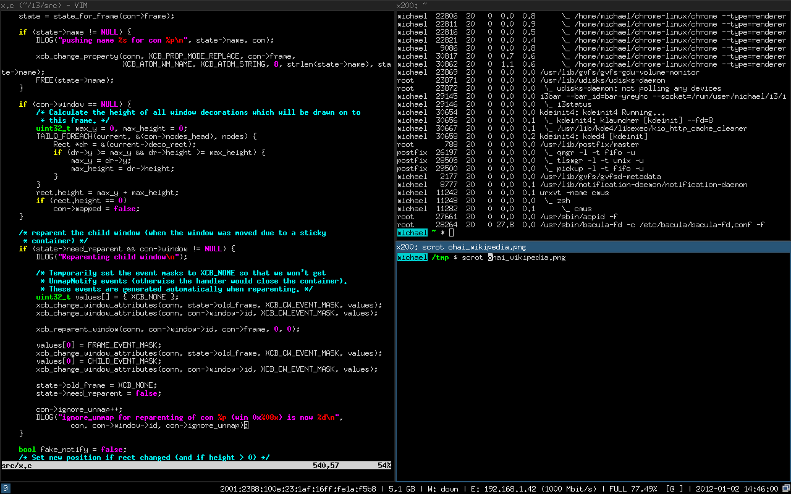
Sway
📌 Sway
- Первый выпуск:
- 2015
- Тип:
- Тайлинговый WM
- Протокол:
- Wayland
- Язык:
- C
- Конфигурация:
- Совместим с i3 (~/.config/sway/config)
- Веб-сайт:
- https://swaywm.org
Sway — это i3-совместимый композитор для Wayland. Если ты знаешь i3, то знаешь и Sway — конфигурация практически идентична. Sway предлагает все преимущества i3, но с современным протоколом Wayland, что означает лучшую безопасность, производительность и поддержку HiDPI.
Философия
Sway — это "i3 для Wayland". Разработчики стремились к 100% совместимости с i3, чтобы пользователи могли легко мигрировать. При этом Sway использует все преимущества Wayland: изоляция приложений, отсутствие screen tearing, нативная поддержка HiDPI.
Ключевые особенности
- 100% совместимость конфигурации с i3
- Встроенный композитор (не нужен отдельный picom/compton)
- Нативная поддержка Wayland и HiDPI
- Лучшая безопасность (изоляция приложений)
- Swaybar и swaylock — встроенные инструменты
- Поддержка нескольких мониторов с разными DPI
- Отсутствие screen tearing
✓ Достоинства
- Современный Wayland вместо устаревшего X11
- Легкая миграция с i3
- Встроенный композитор
- Отличная поддержка HiDPI
- Более безопасный, чем X11
✗ Недостатки
- Некоторые X11-приложения работают через XWayland (медленнее)
- Меньше совместимых инструментов, чем у i3
- Требует более новое оборудование
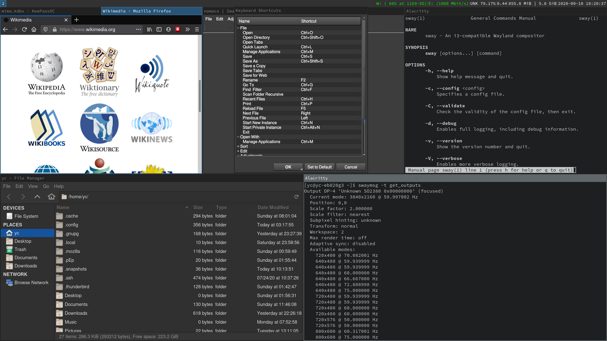
Openbox
📌 Openbox
- Первый выпуск:
- 2002
- Тип:
- Stacking (плавающий) WM
- Протокол:
- X11
- Язык:
- C
- Конфигурация:
- XML (~/.config/openbox/)
- Веб-сайт:
- http://openbox.org
Openbox — легковесный плавающий оконный менеджер с высокой степенью настраиваемости. В отличие от тайлинговых WM, Openbox использует традиционную метафору окон, которые можно свободно перемещать и изменять размер. Это отличный выбор для тех, кто хочет легковесность без радикального изменения привычного рабочего процесса.
Философия
Openbox стремится быть минималистичным, но функциональным. Он предоставляет только управление окнами, оставляя выбор панели, меню и других компонентов пользователю. Openbox часто используется как основа для создания собственных легковесных окружений.
Ключевые особенности
- Традиционное плавающее управление окнами
- Контекстное меню по правой кнопке мыши
- Поддержка тем оформления
- Горячие клавиши и действия мыши
- Может работать как standalone или внутри DE (LXDE, LXQt)
- Очень низкое потребление ресурсов
- Конфигурация через XML-файлы
✓ Достоинства
- Очень легковесный и быстрый
- Привычный интерфейс для новичков
- Высокая настраиваемость
- Стабильный и проверенный временем
- Можно использовать внутри других DE
✗ Недостатки
- XML-конфигурация может быть сложной
- Требует ручной настройки всех компонентов
- Разработка замедлилась в последние годы
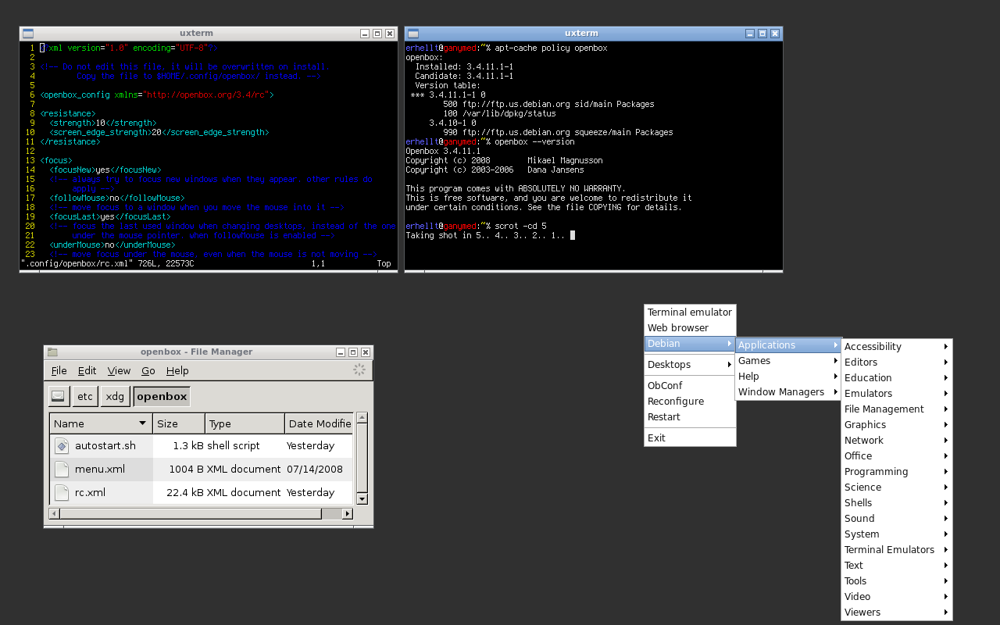
bspwm
📌 bspwm
- Первый выпуск:
- 2013
- Тип:
- Тайлинговый WM (Binary Space Partitioning)
- Протокол:
- X11
- Язык:
- C
- Конфигурация:
- Shell-скрипты (~/.config/bspwm/)
- Веб-сайт:
- GitHub
bspwm (Binary Space Partitioning Window Manager) — тайлинговый WM, который представляет окна как листья полного бинарного дерева. Каждое новое окно делит пространство пополам. bspwm уникален тем, что управление горячими клавишами вынесено в отдельную программу (sxhkd), что делает его крайне гибким.
Ключевые особенности
- Binary Space Partitioning — уникальный алгоритм размещения
- Управление через сообщения (bspc)
- Горячие клавиши через sxhkd (отдельная программа)
- Поддержка нескольких мониторов
- Конфигурация через shell-скрипты
- Очень гибкий и расширяемый
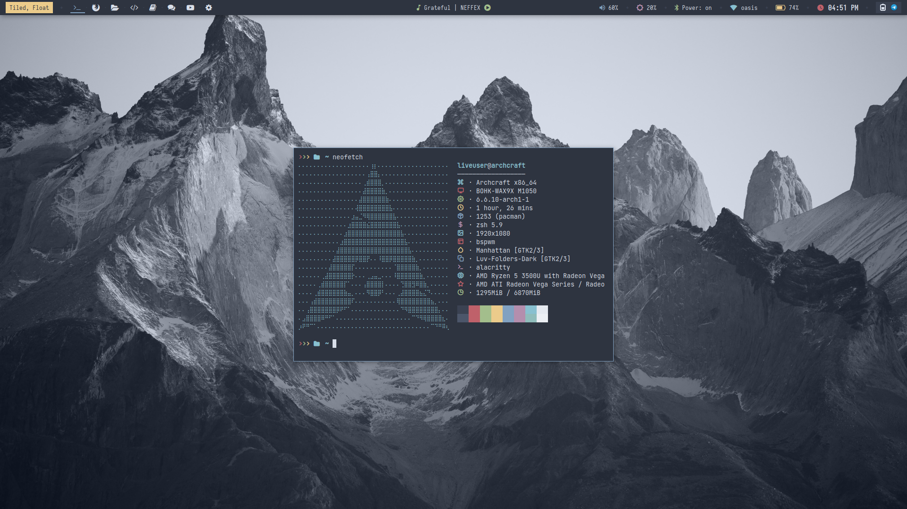
dwm
📌 dwm
- Первый выпуск:
- 2006
- Тип:
- Динамический тайлинговый WM
- Протокол:
- X11
- Язык:
- C
- Конфигурация:
- Исходный код (config.h) — требует перекомпиляции
- Веб-сайт:
- https://dwm.suckless.org
dwm (dynamic window manager) — минималистичный тайлинговый WM от suckless.org. Весь исходный код менее 2000 строк. Конфигурация осуществляется путём редактирования исходного кода и перекомпиляции. dwm следует философии suckless: "программа должна делать одно дело и делать его хорошо".
Философия
dwm — это манифест минимализма. Никаких конфигурационных файлов — только исходный код. Хочешь изменить поведение? Отредактируй config.h и перекомпилируй. Это заставляет пользователя понимать, как работает WM на низком уровне.
Ключевые особенности
- Менее 2000 строк кода
- Конфигурация через исходный код
- Патчи для расширения функциональности
- Встроенная панель (dwmbar)
- Теги вместо рабочих пространств
- Экстремально низкое потребление ресурсов
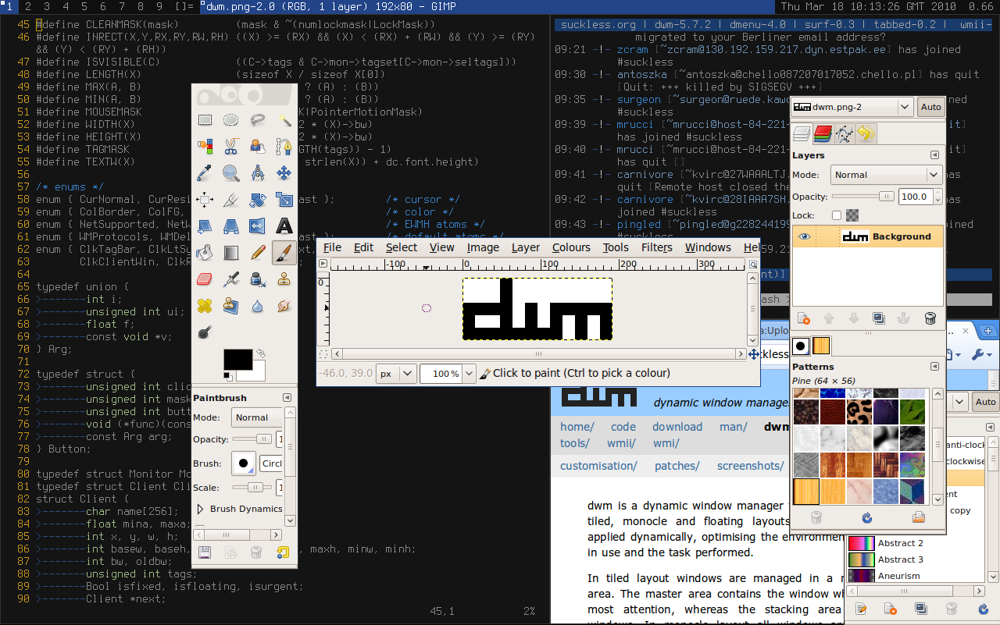
Awesome
📌 Awesome
- Первый выпуск:
- 2007
- Тип:
- Динамический тайлинговый WM
- Протокол:
- X11
- Язык:
- C + Lua
- Конфигурация:
- Lua-скрипты (~/.config/awesome/rc.lua)
- Веб-сайт:
- https://awesomewm.org
Awesome — высоконастраиваемый тайлинговый WM с конфигурацией на языке Lua. Это один из самых мощных и гибких WM, позволяющий создавать сложные виджеты, панели и автоматизацию. Awesome подходит для тех, кто хочет полного контроля и готов писать код.
Ключевые особенности
- Конфигурация на Lua — полноценный язык программирования
- Встроенная система виджетов
- Поддержка тем и красивых панелей
- Динамические теги (workspaces)
- Встроенный системный трей
- Поддержка нескольких мониторов
- Активное сообщество и множество конфигураций
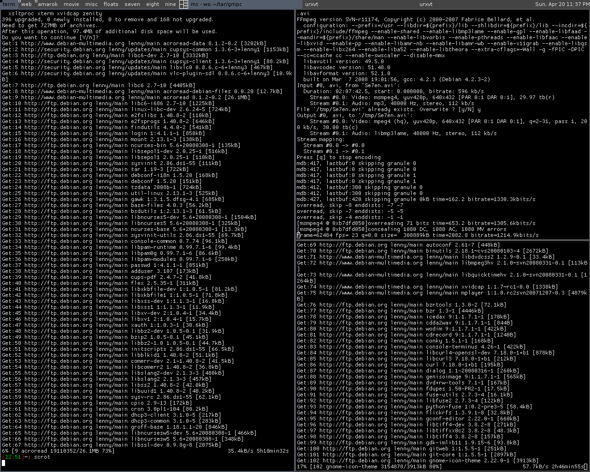
Xmonad
📌 Xmonad
- Первый выпуск:
- 2007
- Тип:
- Динамический тайлинговый WM
- Протокол:
- X11
- Язык:
- Haskell
- Конфигурация:
- Haskell (~/.xmonad/xmonad.hs)
- Веб-сайт:
- https://xmonad.org
Xmonad — тайлинговый WM, написанный и настраиваемый на функциональном языке Haskell. Благодаря строгой типизации Haskell, Xmonad крайне стабилен и предсказуем. Это выбор для программистов, которые ценят математическую строгость и функциональное программирование.
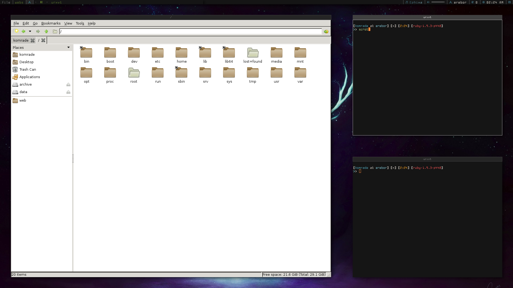
Qtile
📌 Qtile
- Первый выпуск:
- 2008
- Тип:
- Тайлинговый WM
- Протокол:
- X11, Wayland (экспериментально)
- Язык:
- Python
- Конфигурация:
- Python (~/.config/qtile/config.py)
- Веб-сайт:
- http://www.qtile.org
Qtile — тайлинговый WM, полностью написанный и настраиваемый на Python. Это делает его одним из самых доступных для кастомизации WM — если ты знаешь Python, ты можешь настроить Qtile под любые нужды. Qtile также имеет встроенную поддержку виджетов и панелей.
Ключевые особенности
- 100% Python — легко читать и модифицировать
- Встроенная панель с виджетами
- Поддержка нескольких layouts
- Экспериментальная поддержка Wayland
- Простая конфигурация для Python-разработчиков
- Активное развитие
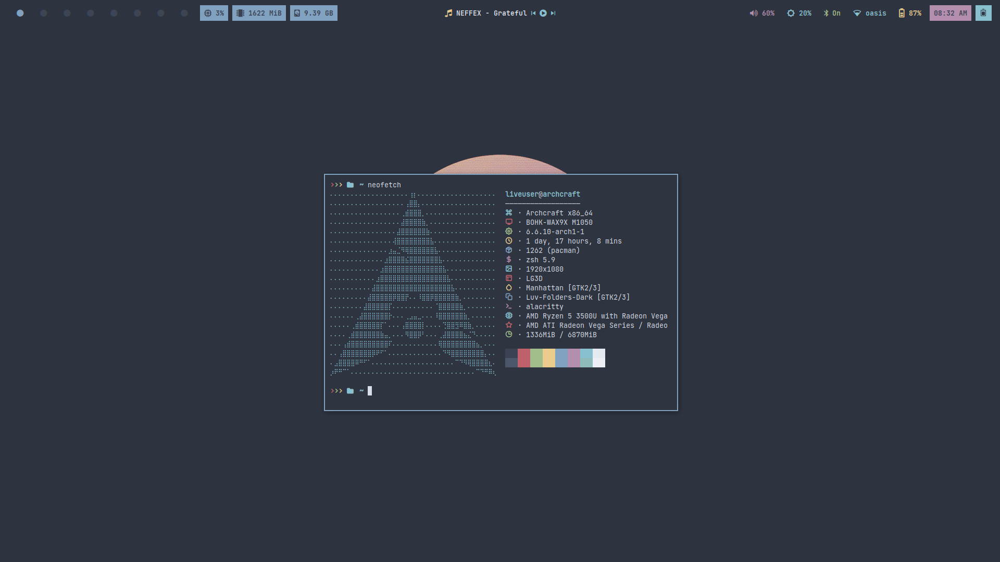
Herbstluftwm
📌 Herbstluftwm
- Первый выпуск:
- 2011
- Тип:
- Ручной тайлинговый WM
- Протокол:
- X11
- Язык:
- C++
- Конфигурация:
- Shell-скрипты
- Веб-сайт:
- https://herbstluftwm.org
Herbstluftwm — ручной тайлинговый WM, где пользователь сам решает, как разделить экран. Вместо автоматического размещения окон, ты создаёшь фреймы и помещаешь в них окна. Это даёт максимальный контроль над layout'ом.
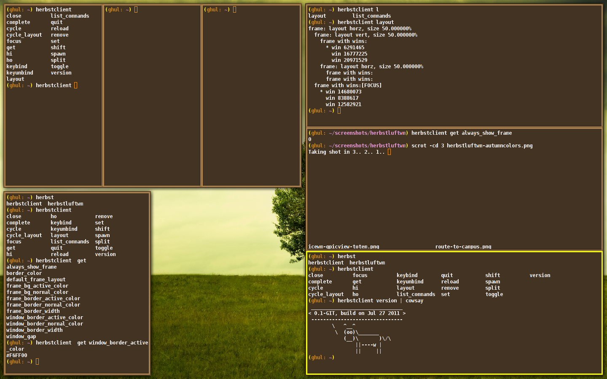
Hyprland
📌 Hyprland
- Первый выпуск:
- 2021
- Тип:
- Динамический тайлинговый композитор
- Протокол:
- Wayland
- Язык:
- C++
- Конфигурация:
- Текстовый файл (~/.config/hypr/hyprland.conf)
- Веб-сайт:
- https://hyprland.org
Hyprland — современный Wayland-композитор с красивыми анимациями и эффектами. Это один из самых визуально привлекательных тайлинговых WM, сочетающий производительность с эстетикой. Hyprland активно развивается и быстро набирает популярность.
Ключевые особенности
- Плавные анимации и эффекты
- Wayland-нативный
- Динамическое тайлинговое размещение
- Поддержка закруглённых углов и теней
- Отличная поддержка нескольких мониторов
- Активное развитие и современный код
- IPC для скриптов
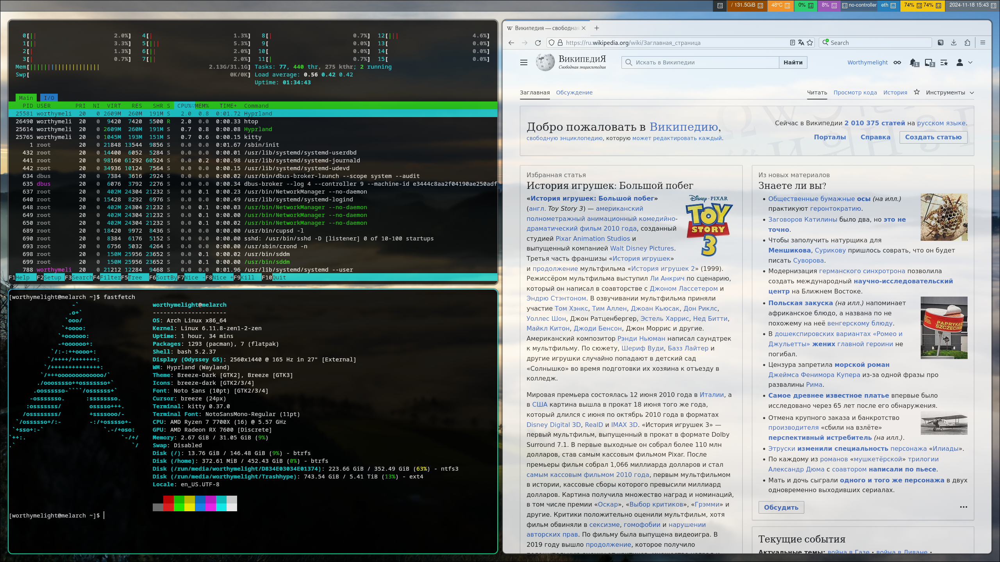
LeftWM
📌 LeftWM
- Первый выпуск:
- 2020
- Тип:
- Тайлинговый WM
- Протокол:
- X11
- Язык:
- Rust
- Конфигурация:
- TOML (~/.config/leftwm/config.toml)
- Веб-сайт:
- GitHub
LeftWM — тайлинговый WM, написанный на Rust. Он фокусируется на стабильности, производительности и простоте конфигурации. LeftWM использует систему "тем", что позволяет легко менять внешний вид и поведение.
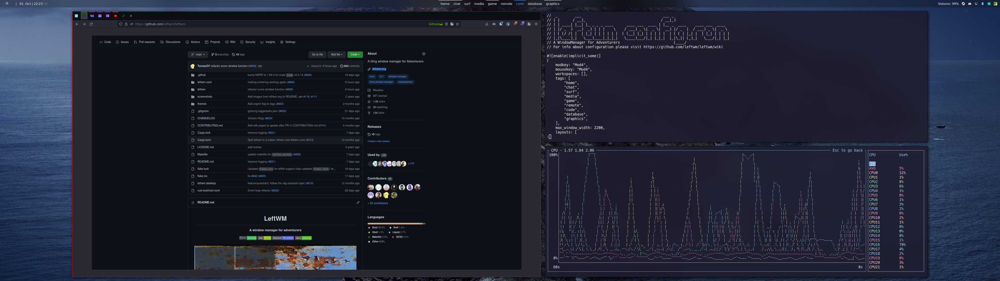
Spectrwm
📌 Spectrwm
- Первый выпуск:
- 2009
- Тип:
- Динамический тайлинговый WM
- Протокол:
- X11
- Язык:
- C
- Конфигурация:
- Текстовый файл (~/.spectrwm.conf)
- Веб-сайт:
- GitHub
Spectrwm (ранее scrotwm) — минималистичный тайлинговый WM, созданный для профессионалов. Он написан хакерами для хакеров, с фокусом на эффективность и минимализм. Spectrwm работает "из коробки" с разумными настройками по умолчанию.
Ключевые особенности
- Простая конфигурация в одном файле
- Встроенная панель
- Поддержка нескольких мониторов
- Минимальное потребление ресурсов
- Работает на BSD и Linux
- Разумные настройки по умолчанию
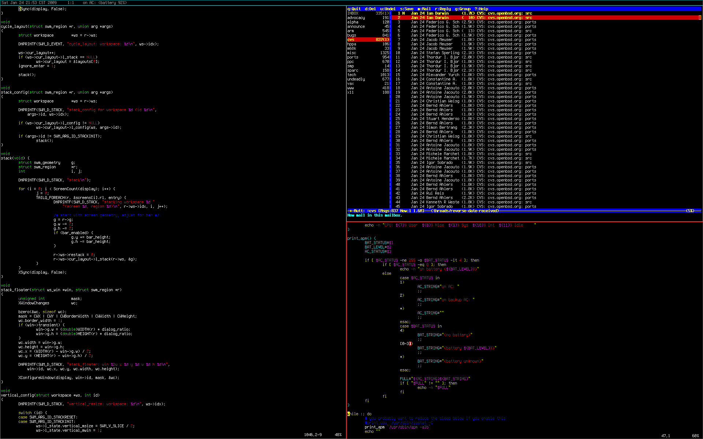
Fluxbox
📌 Fluxbox
- Первый выпуск:
- 2001
- Тип:
- Stacking WM
- Протокол:
- X11
- Язык:
- C++
- Конфигурация:
- Текстовые файлы (~/.fluxbox/)
- Веб-сайт:
- http://fluxbox.org
Fluxbox — легковесный stacking WM, основанный на Blackbox. Он предлагает традиционное управление окнами с вкладками, группировкой и темами. Fluxbox — отличный выбор для тех, кто хочет легковесность без перехода на тайлинг.
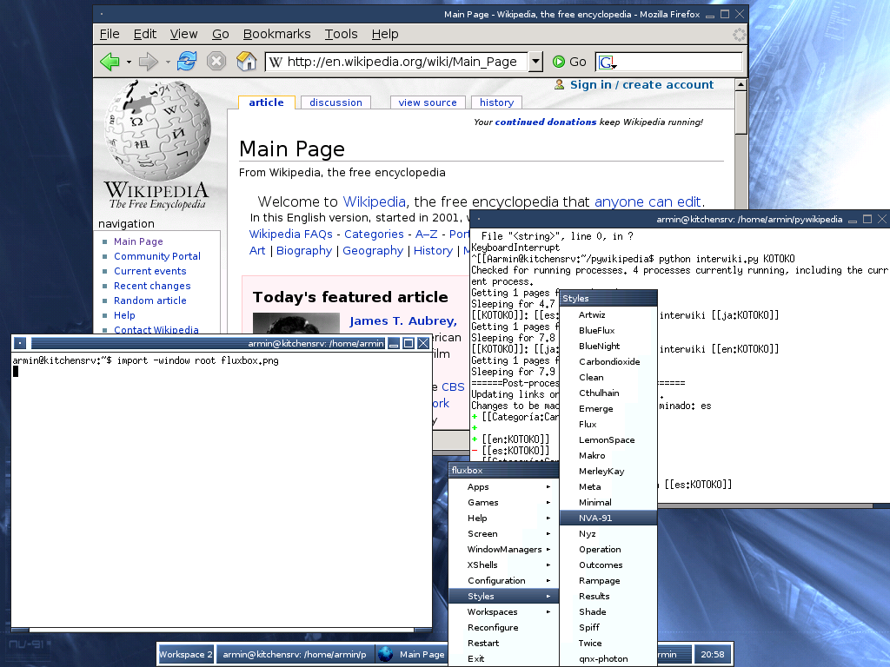
IceWM
📌 IceWM
- Первый выпуск:
- 1997
- Тип:
- Stacking WM
- Протокол:
- X11
- Язык:
- C++
- Конфигурация:
- Текстовые файлы (~/.icewm/)
- Веб-сайт:
- https://ice-wm.org
IceWM — один из старейших легковесных WM, имитирующий интерфейс Windows 95/NT. Он предлагает знакомый интерфейс с панелью задач, системным треем и меню "Пуск". IceWM идеален для старых компьютеров и пользователей, переходящих с Windows.
Ключевые особенности
- Интерфейс в стиле Windows 95
- Встроенная панель задач
- Системный трей
- Поддержка тем
- Очень низкое потребление ресурсов
- Работает на древнем железе
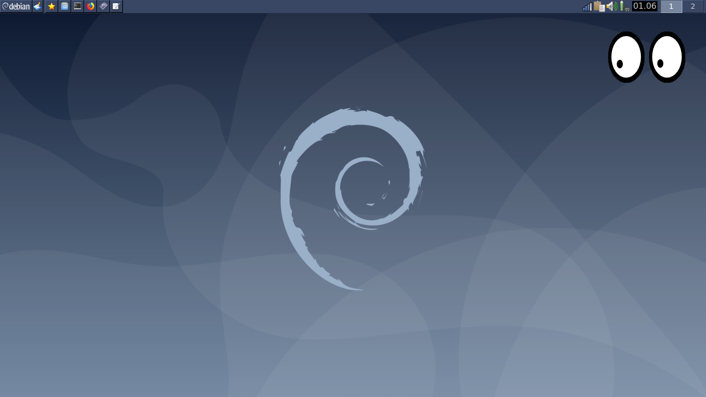
Enlightenment
📌 Enlightenment
- Первый выпуск:
- 1997
- Тип:
- Композитный WM / DE
- Протокол:
- X11, Wayland
- Язык:
- C
- Конфигурация:
- GUI настройки
- Веб-сайт:
- https://www.enlightenment.org
Enlightenment (E) — это нечто среднее между WM и полноценным DE. Он предлагает красивые эффекты, анимации и богатую функциональность, оставаясь при этом относительно легковесным. Enlightenment известен своим уникальным дизайном и инновационными решениями.
Ключевые особенности
- Красивые эффекты и анимации
- Встроенный композитор
- Модульная архитектура
- Поддержка Wayland и X11
- Виджеты и гаджеты
- Уникальный дизайн
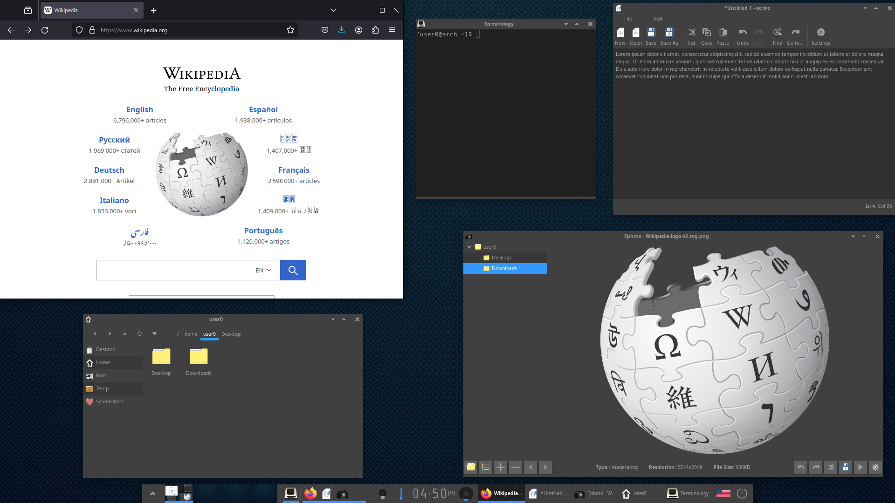
Сравнительная таблица
| WM |
Тип |
Протокол |
Язык конфигурации |
Сложность |
Ресурсы |
| i3 |
Тайлинговый |
X11 |
Текст |
★★★☆☆ |
★★★★★ |
| Sway |
Тайлинговый |
Wayland |
Текст (i3-like) |
★★★☆☆ |
★★★★★ |
| Openbox |
Stacking |
X11 |
XML |
★★☆☆☆ |
★★★★★ |
| bspwm |
Тайлинговый (BSP) |
X11 |
Shell |
★★★★☆ |
★★★★★ |
| dwm |
Тайлинговый |
X11 |
C (исходный код) |
★★★★★ |
★★★★★ |
| Awesome |
Тайлинговый |
X11 |
Lua |
★★★★☆ |
★★★★☆ |
| Xmonad |
Тайлинговый |
X11 |
Haskell |
★★★★★ |
★★★★★ |
| Qtile |
Тайлинговый |
X11/Wayland |
Python |
★★★☆☆ |
★★★★☆ |
| Herbstluftwm |
Ручной тайлинг |
X11 |
Shell |
★★★★☆ |
★★★★★ |
| Hyprland |
Тайлинговый |
Wayland |
Текст |
★★★☆☆ |
★★★★☆ |
| LeftWM |
Тайлинговый |
X11 |
TOML |
★★★☆☆ |
★★★★★ |
| Spectrwm |
Тайлинговый |
X11 |
Текст |
★★☆☆☆ |
★★★★★ |
| Fluxbox |
Stacking |
X11 |
Текст |
★★☆☆☆ |
★★★★★ |
| IceWM |
Stacking |
X11 |
Текст |
★☆☆☆☆ |
★★★★★ |
| Enlightenment |
Композитный |
X11/Wayland |
GUI |
★★☆☆☆ |
★★★☆☆ |